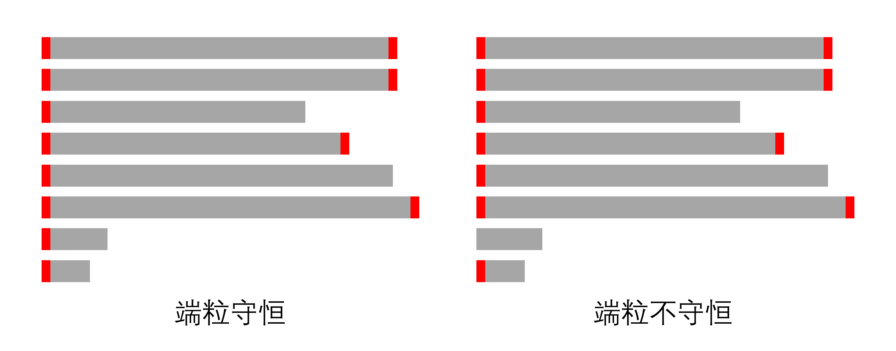
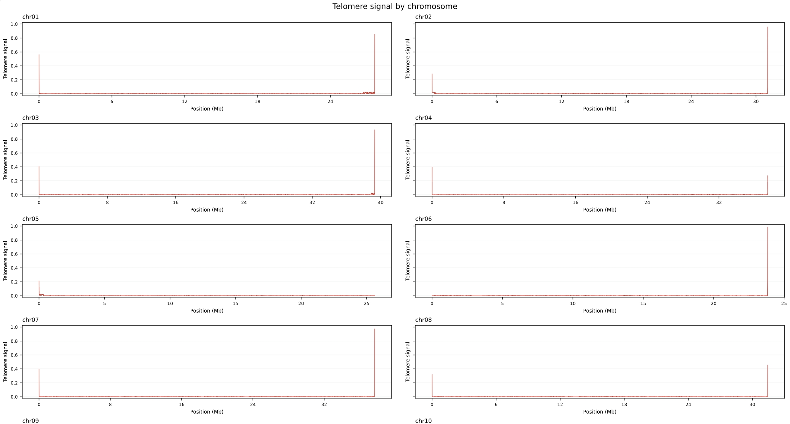

前言
使用 Hifiasm 进行基因组拼接并经过细胞器过滤后，我们得到了 contig 级别的数据。幸运的话，我们能把大部分染色体都拼装成 T2T 的，但是，有一部分染色体，因为 ONT 数据权重（或者你压根没有 ONT），并不能达到 T2T，具体可能是单端粒或无端粒，这个时候就需要我们的 ONT 数据进行回组装。这篇技术博客主要讲解了如何进行回组装修订和简易技术原理介绍。
在这里我是基于我手上的水稻基因组的单倍分型组装做的流程归纳，包含了大部分情况：

端粒探测
本栏目第一个博客最后面的端粒检查只检查两端，但是也完全有可能被拼接到了基因组内部，下面这个小脚本可以生成染色体上每一个区域端粒的存在数据，并可以借助绘图工具进行可视化。
它的使用很简单，我们只需要提供 .fasta 文件即可进行检测。
这个脚本会自动检测你输入的端粒序列（如果你不知道端粒序列，可以用第一篇博客末尾的那个脚本进行自动探测），按照指定不重叠连续小块（默认 10000bp）进行划分，得到每一小块端粒总长度占比，取值为 [0,1]，输出为一个 CSV 文件，如果环境中安装了 matplotlib 及相关库，他还会自己生成一张 svg 图片，可视化每一条染色体的信号。

如果染色体内部没有很强的端粒信号，我们就可以将我们的工作重心放到染色体两端上来。
情况一：微末端补齐
这是我在一次水稻基因组组装中遇到的情况：水稻是 2n=24 倍型，我使用了 HIFI、ONT、HiC 三个平台的测序，使用 Hifiasm 进行了单倍分型的拼接，对于倍型一，一共组装出来了 12 条百万级别的 contig，这说明染色体主体基本上组装出来了，但是有两条染色体是单端粒的，还有一个单端粒的碎片 contig（长度在 10kbp）。端粒总数肯定是不够的，10kbp 对 HiC 挂载来讲又太短了（HiC 主要是针对大片段断裂的挂载，例如着丝粒位置发生了断裂），这种情况下，我们采用微末端补齐策略：提取缺失端粒的主染色体末端序列，使用 minimap2 对 ONT/HIFI 数据进行回比对，钓出末端悬垂 Reads，然后再进一步分析。不再考虑单端粒碎片的信息了。